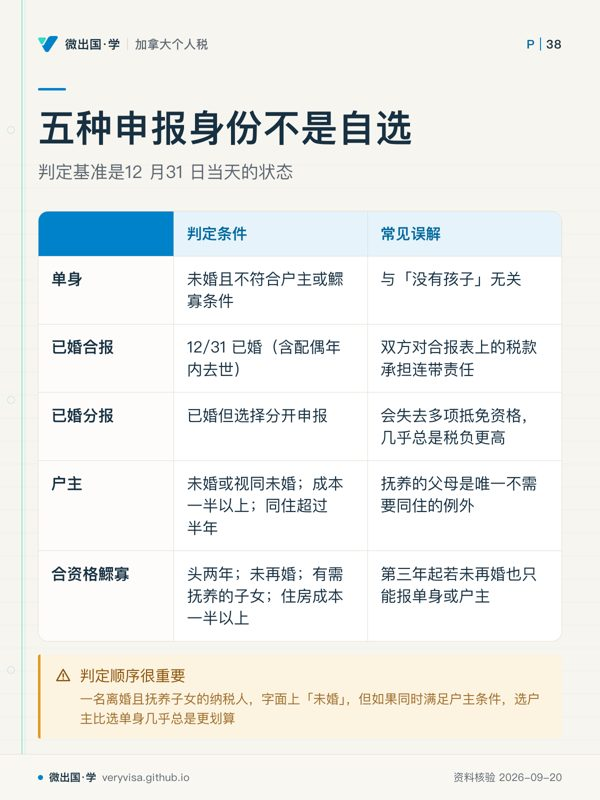
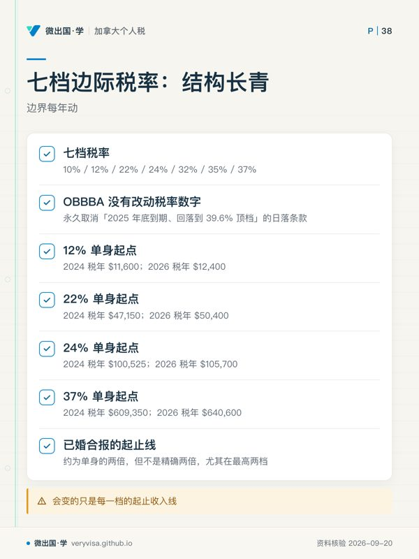
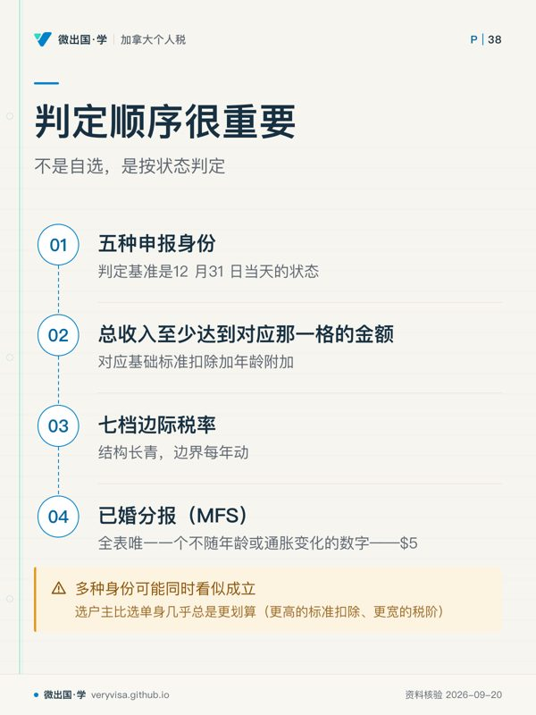

核实日期：2026-09-05｜本页数字口径＝2026 税年（2027 年春季申报）；凡与 2024 考试口径年或 2025 过渡年不同的数字，正文以三列表并列。 复核周期：本页含多项 IRS 通胀调整数字，180 天复核一次（下次 2027-01-31）；机制性条款（如申报义务本身、境外自动延期规则）另按更长周期复核，见文末「来源」逐条标注。
美国联邦个人所得税用一张表——Form 1040——把「你今年赚了多少、该交多少、已经交了多少」压缩成一条链条。这一页讲清楚四件事：谁必须报（包括很多人以为不用报的海外美国公民）、五种申报身份怎么选、总收入怎么一步步走到退税或补税、以及2026 税年的现行数字长什么样。这一页不展开具体收入类别或扣除项的细节计算（那是后续几篇的任务），只搭起这套系统的骨架。读完你应该能做到：判断一个人当年要不要报 1040；给一个具体家庭情况选对申报身份；说清楚 AGI、应税所得、税额、抵免、退税这五个数字分别是什么、顺序为什么是这样；以及——如果你人在加拿大——判断自己有没有一份被忽略掉的美国申报义务。
ℹ️
两套口径要先分清
美国联邦所得税不像加拿大那样有省税并行的问题（各州另有各自的州所得税，本页不展开），但有另一种分流：考试口径 2024 税年数字 vs 2026 现行数字。2025 年 7 月生效的《One Big Beautiful Bill Act》（OBBBA，IRS 官方落地页名为 Working Families Tax Cuts）把 2017 年 TCJA 里原定 2025 年底到期的多项个人所得税条款永久化，并且部分条款是「先永久化、再当场再调高一次」——这意味着「2026 年会回落到 TCJA 之前的水平」这个在 2024 年还成立的预期，现在已经作废。凡本页出现的现行数字，都会同时给出考试口径年、过渡年与现行年三个值。
一、制度设计与底层逻辑：为什么美国的「谁必须报」比加拿大复杂得多
美国联邦所得税的法律基础是《国内税收法典》（Internal Revenue Code, IRC），执行机关是国税局（Internal Revenue Service, IRS）——分别对应加拿大的《所得税法》（Income Tax Act, ITA）与加拿大税务局（Canada Revenue Agency, CRA）。两套制度在「谁被课税」这一点上有一处根本性的分岔，理解这一处分岔是这一章存在的第一个理由。
加拿大按居民身份（residence-based taxation）课税：只要你不是加拿大税务居民，加拿大原则上不管你在境外赚了多少钱。美国不是这样。美国对公民实行公民身份课税（citizenship-based taxation）——一名美国公民无论住在纽约还是温哥华、无论收入是不是来自美国境内，都要就其全球收入向美国申报，除非他正式放弃美国公民身份。这不是历史遗留的技术性条款，是现行制度的核心设计：美国是全世界仅有的少数几个对非居住境内的本国公民也课税的国家之一。这条规则的法律后果不是抽象的——不报税本身可能触发滞纳罚款（：美国逾期申报罚 5%/月，封顶 25%），漏报海外账户还叠加 FBAR 与 FATCA 层面的独立罚则，且诉讼时效在漏报较大金额时会从 3 年拉长到 6 年（IRS）。
美国税法把纳税人分成三类：美国公民（U.S. citizen）、居民外侨（resident alien）、非居民外侨（nonresident alien）。判断一个非公民是不是「居民外侨」，靠两把尺子：一是拿到绿卡（合法永久居民），二是「实质居留测试」（substantial presence test）——本年在美停留满 31 天，且按加权公式（本年天数 + 上一年天数 ÷ 3 + 前年天数 ÷ 6）三年合计满 183 天。居民外侨与美国公民适用同一套申报规则；非居民外侨改用 Form 1040-NR，只就美国来源所得纳税，是另一篇（xb 板块）的主题。
谁必须报，判据不是「你欠不欠税」，是「你的总收入有没有超过一条门槛」——这是美国制度与很多人直觉不同的第二处设计。即使算下来一分钱都不欠（比如全年只有很少的兼职收入），只要总收入（gross income）达到门槛，法律上就必须报表；反过来，即使总收入没到门槛，只要符合某些条件（比如自雇净收入达到 $400、有特定附加税等独立申报义务；无义务但为领取可退还抵免而报，属于自愿申报），也必须报。这条设计背后的博弈很直接：IRS 需要一条客观、不看个人扣除情况就能核验的「必须报」触发线，而门槛本身刻意设定为等于当年标准扣除额——因为标准扣除已经保证了这部分收入无论如何都不产生应纳税额，低于这条线的人报了也是零应纳税，干脆免除申报负担。
二、2026 税年现行规则与数字
2.1 谁必须报：门槛＝标准扣除，随身份与年龄浮动
IRS 官方《Publication 501》给出的规则是一句话：「你必须申报，如果你当年的总收入至少达到 Table 1 里对应那一格的金额」（IRS）。这句话本身是长青的机制；会变的只是表里的数字，普通非受养人的部分门槛对应基础标准扣除加年龄附加；失明附加不提高此表门槛，MFS与受养人另核。
IRS 截至本页核实日尚未发布 2026 税年版《Publication 501》的门槛表（该表通常在次年申报季前后才发布），本页按上述机制、用已发布的 2026 标准扣除（IRS）与 2026 老年/失明附加标准扣除（IRS）推算出下表，并标明这是推算值：
| 申报身份 | 2024 税年（考试口径） | 2025 税年 | 2026 税年（现行·推算） |
|---|---|---|---|
| 单身（Single），65 岁以下 | $14,600 | $15,750 | $16,100 |
| 单身，65 岁以上 | $16,550 | $17,750 | $18,150 |
| 户主（Head of Household），65 岁以下 | $21,900 | $23,625 | $24,150 |
| 户主，65 岁以上 | $23,850 | $25,625 | $26,200 |
| 已婚合报（MFJ），双方均 65 岁以下 | $29,200 | $31,500 | $32,200 |
| 已婚合报，一方 65 岁以上 | $30,750 | $33,100 | $33,850 |
| 已婚合报，双方均 65 岁以上 | $32,300 | $34,700 | $35,500 |
| 已婚分报（MFS），不论年龄 | $5 | $5 | $5（法定值，不指数化） |
| 合资格鰥寡（Qualifying Surviving Spouse），65 岁以下 | $29,200 | $31,500 | $32,200 |
（2024列改按2024官方历史标准扣除与年龄机制，旧表误用2023值；2025 列直引 IRS Table 1，IRS；2026 列为本页机制推算，2027 年 Pub 501 2026 版发布后须回核并撤销「推算」标注。）
已婚分报（MFS）那一行是全表唯一一个不随年龄或通胀变化的数字——$5，自 2018 年 TCJA 取消人头免税额后，这条挂钩基准就没有再被要求调整，是本课罕见的「考试口径数字与现行数字完全一致」的一格。它的实际效果几乎等同于「已婚分报者只要有收入就必须申报」，这是刻意设计：国会不希望夫妻通过分报把收入拆得很低来规避申报义务。
2.2 五种申报身份：不是自选，是按状态判定
美国承认五种申报身份，判定基准是12 月 31 日当天的状态，不是全年平均状态：
| 身份 | 判定条件 | 常见误解 |
|---|---|---|
| 单身（Single） | 12/31 未婚、离婚或依法分居，且不符合户主或鰥寡条件 | 与「没有孩子」无关，有孩子但不符合户主条件的单亲仍报单身 |
| 已婚合报（Married Filing Jointly, MFJ） | 12/31 已婚（含配偶年内去世的情况），双方同意合并申报 | 「同意」不是走过场——双方对合报表上的税款承担连带责任 |
| 已婚分报（Married Filing Separately, MFS） | 已婚但选择分开申报 | 常见于配偶一方不愿为另一方的税务问题担责，但会失去多项抵免资格，几乎总是税负更高的选项 |
| 户主（Head of Household, HoH） | 12/31 未婚（或视同未婚）、支付了全年住房维持成本一半以上、有符合资格的人（qualifying person）同住超过半年 | 「符合资格的人」不是随便一个亲属；抚养的父母是唯一不需要同住的例外 |
| 合资格鰥寡（Qualifying Surviving Spouse, QSS） | 配偶去世后的头两年，未再婚，有需抚养的子女，支付了住房成本一半以上 | 只限去世后两年内，第三年起若未再婚也只能报单身或户主，不能继续用这个身份 |
判定顺序很重要，因为多种身份可能同时看似成立：一名离婚且抚养子女的纳税人，字面上「未婚」，但如果同时满足户主条件，选户主比选单身几乎总是更划算（更高的标准扣除、更宽的税阶）。这也是本节第七部分「常见错报」的第一个陷阱来源。
2.3 七档边际税率：结构长青，边界每年动
七档税率 10% / 12% / 22% / 24% / 32% / 35% / 37% 本身是长青结构，OBBBA 没有改动税率数字，只是把「2025 年底到期、回落到 39.6% 顶档」的日落条款永久取消。会变的只是每一档的起止收入线：
| 税率 | 2024 税年单身起点（考试口径） | 2026 税年单身起点（现行） |
|---|---|---|
| 10% | $0 | $0 |
| 12% | $11,600 | $12,400 |
| 22% | $47,150 | $50,400 |
| 24% | $100,525 | $105,700 |
| 32% | 191,950 | $201,775 |
| 35% | $243,725 | $256,225 |
| 37% | $609,350 | $640,600 |
（考试口径列：us-fund-2025-p04.md；现行列：IR-2025-103 / Rev. Proc. 2025-32，IRS（1、2）。已婚合报的起止线约为单身的两倍，但不是精确两倍，尤其在最高两档，本页不逐档列出。）
2.4 标准扣除：三年三个值，且方向是「涨」不是「TCJA 到期回落」
| 申报身份 | 2024 税年（考试口径） | 2025 税年 | 2026 税年（现行） |
|---|---|---|---|
| 单身 / 已婚分报 | 14,600 美元（2024 税年；已生效；官方公布值） | 15,750 美元（2025 税年；已生效；官方公布值） | 16,100 美元（2026 税年；已生效；官方公布值） |
| 已婚合报 / 合资格鰥寡 | 29,200 美元（2024 税年；已生效；官方公布值） | 31,500 美元（2025 税年；已生效；官方公布值） | 32,200 美元（2026 税年；已生效；官方公布值） |
| 户主 | 21,900 美元（2024 税年；已生效；官方公布值） | 23,625 美元（2025 税年；已生效；官方公布值） | 24,150 美元（2026 税年；已生效；官方公布值） |
（考试口径：us-fund-2025-p01.md:1706；现行：IRS（1、2）。）这是全篇最值得单独记一笔的反直觉点：2024 年备考这门课的人普遍知道「TCJA 的高标准扣除条款原定 2025 年底到期，届时会掉回接近 2017 年以前的水平（当时单身约 $6,500 上下）」。这个预期已经作废——OBBBA 不但取消了到期条款，还在取消的同时把数字直接又抬高了一截（从 $14,600/$29,200/$21,900 一路涨到 2025 年的 $15,750/$31,500/$23,625，2026 年再涨到 $16,100/$32,200/$24,150），基年也从 2018 挪到了 2025 重新起算通胀调整。
65 岁以上或失明再加一档附加标准扣除：2026 税年已婚每项 $1,650、单身/户主每项 $2,050（IRS；2024官方历史是已婚/合资格鰥寡1550、其他未婚者1950）。这笔附加额与下一段的「老年 $6,000 新增扣除」是两笔不同的钱，可以叠加，不要混为一谈。
2.5 四项「2025–2028 限时」新扣除：只活四年,itemize 与否都能用
OBBBA 新增四项扣除，考试口径完全没有（写于法案签署之前），全部落在新表 Schedule 1-A 并汇总到 Form 1040 line 13b（IRS），且都是「无论标准扣除还是逐项扣除都能再扣」的第三类扣除，不是标准扣除的一部分：
| 项目 | 2026 税年上限 | 收入递减线（MAGI） | 到期年 |
|---|---|---|---|
| 老年附加扣除（65 岁以上，§151(d)(5)(C)） | 每人 $6,000 | 单身 $75,000 / 合报 $150,000，超线按 6% 递减 | 2028 税年后到期 |
| 小费收入扣除 | 每份报表 $25,000（合报不翻倍） | $150,000 / $300,000，超线按 10% 递减 | 2028 税年后到期 |
| 加班收入扣除 | 单身 $12,500 / 合报 $25,000（合报翻倍） | $150,000 / $300,000，超线按 10% 递减 | 2028 税年后到期 |
| 车贷利息扣除 | $10,000 | $100,000 / $200,000；超线后每 $1,000（不足一档也按一档）减 $200，即 20% 阶梯式递减（U.S. Government Publishing O…） | 2028 税年后到期 |
（IRS（1、2））小费与加班这两项最容易串：小费扣除的 $25,000 上限是「每份报表」，单身报表与夫妻合报表都是 $25,000，不会因为合报而翻倍；加班扣除恰好相反，单身 $12,500、合报 $25,000，是真的翻倍。老年附加扣除挂在人头免税额条款下面（§151），与前面 2.4 节 65 岁以上标准扣除附加额（§63(f)）是两笔独立的钱，可以同时申报——2026 年一名单身、65 岁以上、有资格拿老年扣除的纳税人，理论上能叠加：基础标准扣除 $16,100 + 65 岁附加标准扣除 $2,050 + 老年新增扣除 $6,000 = $24,150 的免税额，还没算任何其他扣除或抵免。
三、实务流程：从总收入到退税，Form 1040 这张表怎么走

Form 1040 是现行的个人所得税基础表（1040EZ、1040A 已于 2018 年后取消，全部并入 1040），其余收入类别、扣除、抵免通过各附表（Schedule 1 到 Schedule 3 等）汇总回主表。整条计算链条分两段：
第一段：从收入到应税所得。 工资、利息、股息等各类收入汇总为总收入；加上 Schedule 1 里的「其他收入」（如自雇所得、失业救济金、数字资产处置所得）得到总收入合计；减去 Schedule 1 里的「收入调整」（即所谓 above-the-line 扣除，如传统 IRA 供款、学生贷款利息、自雇健康保险保费）得到调整后总收入（Adjusted Gross Income, AGI）——这是全表最重要的一个中间数字，因为几乎所有收入门槛、抵免资格、递减线，判的都是 AGI 或以 AGI 为基础算出的修正后调整总收入（Modified AGI, MAGI），而不是总收入本身。AGI 减去标准扣除（或逐项扣除，两者二选一，取较高者，逐项扣除走 Schedule A）、慈善捐赠（非逐项者也可扣一小笔）、合格营业收入扣除（Qualified Business Income Deduction, QBI，针对自雇与转手实体业主）以及 2.5 节的四项新扣除（Schedule 1-A），得到应税所得（Taxable Income）。
第二段：从应税所得到退税或补税。 应税所得按 2.3 节的七档边际税率表算出初步税额；加上 Schedule 2 里的「其他税」（如自雇税、追加医疗保险税）；减去不可退还抵免（nonrefundable credit，如子女税收抵免的非可退还部分、外国税收抵免）——不可退还抵免只能把税额抵到零，抵不出负数，未用部分须看该抵免的结转或可退还规则（第七节陷阱之一）；得到当年应缴总税额。再减去全年预扣税款与可退还抵免（refundable credit，如劳动所得税收抵免 EITC、子女税收抵免中可退还的 $1,700 部分）得到总付款。总付款 > 应缴总税额 ＝ 退税；应缴总税额 > 总付款 ＝ 补税。
实务上要记住的三个截止日：常规申报截止日是 4 月 15 日；住在美国境外（或军人境外服役）者，无需申请即自动获得2 个月延期到 6 月 15 日，但欠税的利息仍从 4 月 15 日起算，不因延期而暂停（IRS）；如果 6 月 15 日之前还需要更多时间，可在此之前提交 Form 4868 申请再延到 10 月 15 日——三层延期，层层都要在上一层截止日之前主动或自动触发，特殊境外酌情延期至12/15及Form2350资格延期另有条件，不能说10/15之后绝无延期。
四、加拿大读者为什么要懂这条
如果你人在加拿大、持有的却是美国公民身份或绿卡（含已过期但从未正式放弃的绿卡），这一章不是「别国的税法」，是你自己现在就适用的义务。三类人最常撞上这件事却毫无察觉：一是在美国出生、幼年随父母移民加拿大后再未回美国生活过的「意外美国人」（accidental American）；二是持美国绿卡多年、早已定居加拿大却从未正式放弃身份的人；三是与美国人结婚的加拿大配偶，需要核本人是否有美国税务身份或主动居民选择；结婚/联名账户本身不自动产生1040义务。
第一件要澄清的事：「我住在加拿大，收入也都是加拿大来源」不构成不用报 1040 的理由（第一节）。判断要不要报的门槛，用的是本页 2.1 节的总收入表，全球收入都要计入，与收入来源地无关。第二件事：在常规到期日满足境外居住且主要工作地点等条件时，可获两个月延期，并须附说明（第三节），因为你符合「住在美国境外」的自动延期条件——但如果算下来有欠税，利息仍从 4 月 15 日起算，「反正我是 6 月 15 日才到期」不能当作不用提早算清欠税的理由。
第三件事，也是最容易造成双重征税的一环：加拿大的 RRSP、TFSA、非注册投资账户，在美国税法眼里分别有不同的处理方式，其中最容易踩雷的是TFSA是账户安排，不能直接判成PFIC；账户内加拿大基金/ETF可能是PFIC，现金和直接持有普通股票须分别判断，符合Form8621条件时单独申报，注册账户的免税身份在美国这边并不自动适用（IRS）。同时，全年任一时点境外金融账户合计价值超过 $10,000 就要单独申报 FBAR（IRS（代 FinCEN 说明）），价值门槛更高时还要申报 Form 8938（IRS）——这两张表都不是报税表，是信息申报表，即使不产生任何应纳税额，漏报的罚则也很重。为了避免同一笔收入在加美两地被完整课两次税，制度上提供了外国税收抵免（Foreign Tax Credit）与海外劳动所得免税额（Foreign Earned Income Exclusion, FEIE，2026 税年 $132,900）两条主要路径，但这两条路径怎么选、怎么和《美加税收协定》的规则配合，属于 xb 板块的独立主题，本页只指出「这道题存在」。
对不持美国身份、只是普通加拿大税务居民的读者，这一章的价值是另一种：越来越多加拿大家庭出现「一方是美国公民、一方不是」「子女出生在美国」「名下持有美国上市股票或美国房产」等情况，理解 1040 这条链条，是判断自己或家人有没有被卷入美国申报义务的第一步。
五、历史变革：从「累进税制的争议」到「日落条款被永久取消」
美国联邦所得税并非自建国起就有——1862 年南北战争期间首次开征所得税，1872 年战后废止；1894 年国会再次立法开征统一税率的所得税，次年被最高法院裁定违宪（未按各州人口比例分配）；直到 1913 年第十六修正案批准，国会才获得不受人口分配限制、直接对收入征税的宪法授权，现行联邦所得税制度由此确立。申报截止日 1955 年起改为 4 月 15 日，此前是 3 月。
现行制度最近一次结构性变革是 2017 年底通过的《减税与就业法案》（Tax Cuts and Jobs Act, TCJA），2018 税年起生效：取消了人头免税额（personal exemption）、大幅提高标准扣除作为替代、重排七档边际税率的起止线、1040 表本身也从「长表 + 附表 A-F」的旧格式改版为现在这种「短主表 + Schedule 1/2/3」的模块化格式。TCJA 的个人所得税条款绝大多数写有 2025 年底的日落条款——也就是说，考试口径写作的 2024–2025 学年，业内普遍预期这些条款会在 2025 年底到期、多数规则回落到 2017 年以前的状态。2025 年 7 月 4 日签署生效的 OBBBA 改写了这个剧本：不是简单延长日落期限，而是把标准扣除、税率级距、子女税收抵免等条款永久化，其中标准扣除与子女税收抵免还在永久化的同时又调高了一次，另外新增四项 2025–2028 限时扣除（2.5 节）。理解「本该到期却被永久化、还顺带调高」这个变化本身，比记住任何一个具体数字都更重要——它是判断「明年这个数字会不会变」时首先要问的问题。
六、案例
案例一：列治文的新移民一家如何选申报身份（人物与数字均为示例）
Wei 与 Amy 是一对持工作签证在美国居住的加拿大公民夫妇，2026 年内在美国境内住满了实质居留测试要求的天数，构成美国税法下的「居民外侨」。两人育有一名 8 岁的孩子。年底做税务规划时，他们发现自己面对三个选项：已婚合报、已婚分报、以及（如果婚姻关系发生变化）户主。适用规则：已婚状态下不能选单身或户主（除非满足「视同未婚」的特殊条件，如年内分居超过半年且孩子随一方居住），只能在合报与分报之间选。算出的数：以两人合计收入估算，合报可用的标准扣除是 2026 年的 $32,200，而分报则各自只能用 $16,100，且分报会同时失去多项抵免资格（如子女与抚养费抵免的部分限制、教育抵免完全不可用）。常见错报：不少新移民听信「分开报税可以避税」的坊间说法，机械地选择分报，实际上分报几乎总是导致更高的合计税负，只有在配偶一方涉及税务问题、不愿承担连带责任等非税务考量下才值得考虑。
案例二：素里的自雇网约车司机，忘了自己也要报联邦所得税（示例）
Marco 是持美国绿卡、常年居住在美国境内的自雇网约车司机，全年净自雇收入约 $38,000。他知道自己要缴自雇税（Self-Employment Tax，覆盖社安与联邦医疗保险部分），却误以为「反正净收入不高，扣完标准扣除也没剩多少应税所得，干脆不用报」。适用规则：自雇净收入只要达到 $400 就必须报表，这条门槛与本页 2.1 节的总收入门槛是两条独立触发线，任何一条满足都必须申报，而 $400 这条线远低于任何身份的标准扣除门槛。算出的数：即便他的应纳所得税额算出来是零，自雇税仍按净收入的一定比例单独计算，不受标准扣除影响。常见错报：把「应纳所得税为零」等同于「不用报表」，混淆了「要不要报」与「报了要不要交钱」这两个完全不同的问题。
案例三：温哥华的「意外美国人」发现自己十年没报美国税（示例）
Grace 出生在美国、一岁时随父母移民加拿大，此后从未在美国生活或工作，一直以为「恰好在美国出生跟美国税法没关系」。三十岁办理证件时才被告知，凭出生地即自动取得美国公民身份，全球收入课税（第一节）意味着过去十年只要总收入达到当年门槛就应报 1040，即便收入全部来自加拿大雇主。适用规则：IRS 设有「精简申报合规程序」（Streamlined Filing Compliance Procedures）供非故意未合规者补报，通常只需补近三年 1040、近六年 FBAR，可豁免部分罚款，但核心资格是证明「非故意」，且一旦 IRS 已立案调查就丧失资格。本案例不构成具体税务建议，实际操作需跨境税务顾问介入。
七、常见错报与自查清单
- 把「总收入没到门槛」和「应纳税额是零」当成同一件事。前者决定要不要报表，后者是报表算出来的结果——自雇净收入达到 $400 这条独立触发线常被忽略（案例二）。
- 离婚或分居后机械选「单身」，漏掉本可以选的「户主」。户主的标准扣除更高、税阶更宽，符合条件（支付住房成本一半以上、有符合资格的人同住超半年，抚养父母除外）却选单身，等于白白多交税。
- 把「TCJA 条款 2025 年底到期」的旧预期当成 2026 年仍然成立的事实。OBBBA 已经把这些条款永久化并部分调高（2.4 节），继续按旧剧本估算 2026 年的标准扣除或税阶会算出偏低的错误结果。
- 把不可退还抵免和可退还抵免混为一谈。不可退还抵免只能把税额抵到零，未用额不自动退款，是否结转须分项目核，不会变成退税的一部分；只有可退还抵免（如 EITC、子女税收抵免中的可退还部分）才能在税额已经为零之后继续产生退税。
- 以为住在境外就永远不用担心 4 月 15 日。符合条件的境外自动两个月延期可延申报与付款，但不延利息起算日——欠税的利息仍从 4 月 15 日起算，等到 6 月 15 日才处理欠税会白白多付几个月利息。
- 持美国公民或绿卡身份、常年居住加拿大的人，以为「收入都在加拿大、已经在加拿大报过税」就不用管美国这边。公民身份课税不问收入来源地，第四节已经讲清楚这条规则本身以及 FBAR/8938/PFIC 这几个容易被漏掉的信息申报义务。
术语双语表
| en | zh | 一句机制 |
|---|---|---|
| Form 1040 | 1040 表 | 现行个人所得税基础表，各附表数字最终汇总回这张主表 |
| gross income | 总收入 | 判断要不要报表的第一条门槛，不减任何扣除 |
| Adjusted Gross Income (AGI) | 调整后总收入 | 总收入减收入调整，是绝大多数抵免/门槛的判定基准 |
| Modified AGI (MAGI) | 修正后调整总收入 | 以 AGI 为基础按特定条款加回部分项目，各条款的加回项不完全相同 |
| taxable income | 应税所得 | AGI 减标准扣除或逐项扣除、QBI 等之后的余额，用来查税阶算税额 |
| standard deduction | 标准扣除 | 按申报身份固定的免税额，与逐项扣除二选一取较高者 |
| itemized deduction | 逐项扣除 | 走 Schedule A 逐项列支（如房贷利息、州和地方税、慈善捐赠） |
| filing status | 申报身份 | 五种之一，以 12/31 当天状态判定，决定标准扣除与税阶 |
| Head of Household (HoH) | 户主 | 未婚、支付住房成本过半、有符合资格的人同住过半年 |
| Qualifying Surviving Spouse (QSS) | 合资格鰥寡 | 配偶去世后头两年、未再婚、抚养子女者可用，第三年起失效 |
| nonrefundable credit | 不可退还抵免 | 只能把税额抵到零，未用额不自动退款，是否结转须分项目核 |
| refundable credit | 可退还抵免 | 税额抵到零后仍可继续退还，如 EITC |
| Child Tax Credit (CTC) | 子女税收抵免 | 2026 税年最高 $2,200，可退还部分 $1,700 |
| Qualified Business Income (QBI) deduction | 合格营业收入扣除 | 针对自雇与转手实体业主的额外扣除，走应税所得计算段 |
| Schedule 1-A | 附表 1-A | OBBBA 新增四项限时扣除（老年/小费/加班/车贷利息）的专用附表 |
| citizenship-based taxation | 公民身份课税 | 美国对公民按全球收入课税，不问居住地，是本页与加拿大制度的核心分岔 |
| resident alien / nonresident alien | 居民外侨 / 非居民外侨 | 非公民按是否满足绿卡或实质居留测试分类，适用不同申报表 |
| substantial presence test | 实质居留测试 | 判定非公民是否构成居民外侨的加权天数公式 |
| automatic 2-month extension | 自动 2 个月延期 | 住境外者申报截止日自动延至 6/15，无需申请，但利息仍从 4/15 起算 |
| Form 4868 | 4868 表 | 申请再延期到 10/15 用的表，须在上一层延期截止日之前提交 |
| Foreign Bank Account Report (FBAR) | 海外银行账户报告 | 全年任一时点境外账户合计超 $10,000 须单独申报，含加拿大 RRSP/TFSA |
| Form 8938 | 8938 表 | FATCA 项下的海外资产申报表，门槛高于 FBAR 且按境内外分档 |
| Passive Foreign Investment Company (PFIC) | 被动外国投资公司 | 加拿大共同基金/ETF 常落入此类，含注册账户内持有的部分 |
| Foreign Earned Income Exclusion (FEIE) | 海外劳动所得免税额 | 2026 税年 $132,900，缓解境外劳动所得的双重征税 |
来源
- IRS, Working Families Tax Cuts – Individuals and workers（IRS）
- IRS, IR-2025-103, IRS releases tax inflation adjustments for tax year 2026（IRS）
- IRS, Rev. Proc. 2025-32（IRS；老年/失明附加标准扣除见 IRS）
- Public Law 119-21（OBBBA）全文，govinfo.gov（U.S. Government Publishing O…）
- IRS, Working Families Tax Cuts（OBBBA 总落地页，IRS）
- IRS, Schedule 1-A, Additional Deductions: What to know about the new form，FS-2026-04（IRS）
- IRS, Report of Foreign Bank and Financial Accounts (FBAR)（IRS（代 FinCEN 说明））
- IRS, Summary of FATCA reporting for U.S. taxpayers（IRS）
- IRS, Instructions for Form 8621, Rev. 12-2025（IRS）
- IRS, Publication 501，Table 1 申报门槛（IRS，临时 id，待主控并入台账）
- IRS, U.S. Citizens and Resident Aliens Abroad，自动 2 个月延期规则（IRS，临时 id，待主控并入台账）
本页知识卡
不看正文也能拿到这一节的核心内容：先看导读，再看图。点图放大，左右翻页。
- 先看先看收入与对应金额的关系，再区分普通非受养人与MFS。
- 易漏2027 年 Pub 501 2026 版发布后须回核并撤销「推算」标注。
- 下一步去练习，按身份与年龄找对应金额，再带结果找持牌专业人士。

- 先看先对照左列资格，再用右列排除名称带来的误读。
- 易漏同一人可能看似落入不止一种身份，不能只凭「未婚」判断。
- 下一步去练习，先写年末状态，再逐项核住房、子女和同住条件。

- 先看先把税率结构和各年起点分开看，别把两类数字混在一起。
- 易漏考试口径列与现行列对应不同税年，已婚合报也不能机械翻倍。
- 下一步去讲义，对照考试口径列与现行列再做练习。

- 先看从上到下读四步，先把身份定准，再进入金额与税阶。
- 易漏离婚且抚养子女时，字面上的「未婚」还不足以直接报单身。
- 下一步去练习，先写身份判断，再查对应门槛，最后算税。